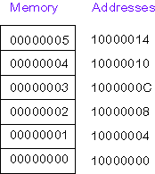

A symbolic address is the name used in source code for a location in memory.
A symbolic address stands for whatever location in memory a particular datum or instruction ends up at. Usually this is not known in advance. Often a program is built using several object modules, library modules, and assembler source files. (See Chapter One on separate assembly.) The various modules refer to locations in each other by using symbolic addresses. The actual addresses are determined by system software when all the modules are linked together and loaded into memory. It is very hard (and not necessary) for a programmer to determine what addresses various items will eventually have.
The assembler enables a programmer to refer to an address by a symbol, even when the address will not be known until much later in the process of building an executable. The assembler and subsequent systems software (linker and loader) keep track of the symbolic address until the address it represents is finally determined. Just before run time, everything is resolved. A machine language program and data can then be loaded into memory and executed.
Here is a program fragment and a picture of memory at run-time. Assume that for this run the data section begins at 0x10000000
.data
val0: .word 0
val1: .word 1
val2: .word 2
val3: .word 3
val4: .word 4
val5: .word 5

In the picture, what data is in the word starting
at address 0x1000000C?
What is the address of the word containing 0x00000002?